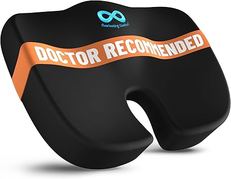
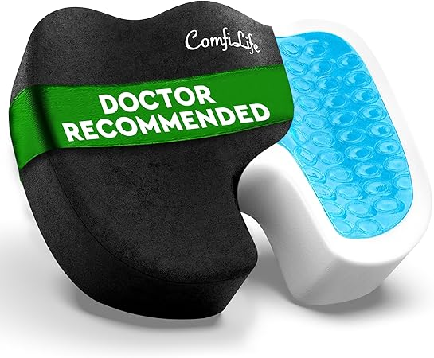

← usaseatcushion.com
Usaseatcushion: Quality vs Marketing
May 2026
Whether you're upgrading or buying your first, the right usaseatcushion in 2026 comes down to a few factors most buyers overlook.
Our Current Favorites

→ Everlasting Comfort — Best seller
→ Aylio Coccyx Orthopedic — Consistently rated
→ Purple Seat Cushion — Top rated
→ TravelMate Gel Cushion — Top rated

→ ComfiLife Premium — Top rated
Quick Tips Before You Buy
- The Q&A section on usaseatcushion listings often answers questions that no review covers.
- Amazon's return policy removes most of the risk when buying usaseatcushion you haven't seen in person.
- Buying usaseatcushion as a gift? Pick something with easy exchanges. Preferences are personal.
- The 3-star reviews are gold. They're usually the most balanced and honest takes on usaseatcushion.
Key Features Worth Paying For
- Brand track record — Established usaseatcushion brands have more to lose from bad products. That accountability matters.
- Build quality — Cheap usaseatcushion fall apart fast. Look for solid construction and quality materials.
- Verified reviews — Focus on 4+ star products with 50+ verified reviews. Ignore anything with only a handful of ratings.
- Availability — In-stock with fast shipping beats a "better" product backordered for weeks.
- Total cost of ownership — The cheapest usaseatcushion upfront can be the most expensive over time with replacements and accessories.
Last Word
2026 has brought quality usaseatcushion options at every price point. See our complete guide for current recommendations.
Affiliate Disclosure: As an Amazon Associate, we earn from qualifying purchases. This doesn't affect our recommendations.
🔍 Expert Resources from Bartact